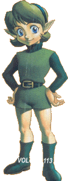
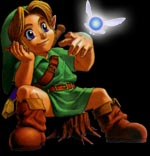
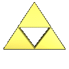
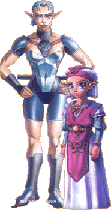
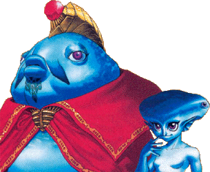
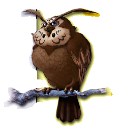
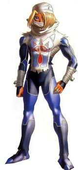
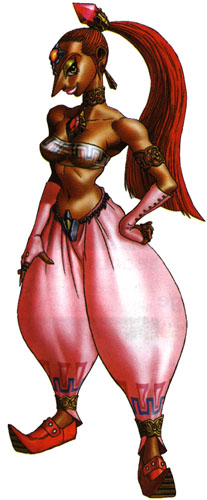
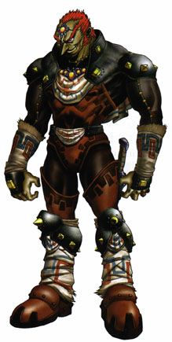

Saria- Saria is a close friend to Link. She guards the Lost Woods and the Sacred Forest Meadow and knows her way around in them very well. She sees the Sacred Forest Meadow as a great place to hang out and think. She teaches Link Saria's Song which will let him speak with her from anywhere in Hyrule. Later on, when Link is in his adulthood, Saria recieves a call from the forest requesting her help. Naturally, she goes to it's aid and finds the Forest Temple is disarray. After Link defeats the Temple and saves Saria and the Forest, Saria awakens as the The Sage of the Forest and grants you with the Forest Medallion.
Deku Tree- The Deku Tree is the guardian of the Forest and protecter of all who live in it. At the beginning of the game, he becomes cursed by Ganondorf and sends Navi the Fairy to find the Chosen One so that he may begin to fulfill his destiny and save the Deku Tree. After Link vanquishes all the enemies inside the great tree, The Deku Tree tells Link that he had no hope from the beginning. He briefs you of the background of your quest to save Hyrule, grants you with the Kokiri Emerald, and slowly passes away.
Princess Zelda- As a young Princess, Zelda is aware of Ganondorf's Evil. Even though he has pledged his alligence to the King of Hyrule, Zelda does not trust him and his ways. She devotes a fair amount of time researching Ganondorf's goals and discovers that he seeks the Mighty Triforce. She also learns of the Legend of the Chosen One and hopes that he will one day come. After Link infiltrates the Castle and makes contact with Zelda, Zelda tells Link of the three spiritual stones needed to open the Door of Time. If this door is opened, one can retrieve the Sacred Sword and enter the Sacred Realm, where the Triforce lies. Legend has it that when a being with a true heart touches the Triforce, he will be granted the power of the Gods. If his heart is Evil, then the Triforce will split into three separate parts: Power, Wisdom and Courage. One part will be givin to the Triforce's finder, the one that best represents him, and the others will find beings that they represent. Zelda tells Link to find the three stones before Ganondorf and lock the Triforce away in the Sacred Realm. As Link unlocks the Door of Time, Ganondorf seizes the moment and enters the Sacred Realm. As he touches the Triforce, it splits with Power going to Ganondorf, Wisdow going to Zelda, and Courage, going to Link. Link takes the Sacred Sword and continues his quest. After Ganondorf takes Hyrule Castle, Zelda is forced to change her identity, to Sheik, and aids you in recovering the six medallions. With the medallions found, Zelda awakens as the sixth sage and grants Link the Light Arrows. With the power of the other five sages, Link and Zelda defeat Ganondorf and lock him in the Sacred Realm of Evil.
Impa- Impa is the last surviving Shiekah and the savior of Kakariko Village. When the Shadow Beast raided the Village, she locked him away in the Bottom of the Well. She now serves as Princess Zelda's servant and protecter. She teaches Link Zelda's Lullaby on his ocarina and escorts him out of the Castle. After Link grows up, the Shadow Beast escapes from the well and takes over the Shadow Temple. After Link banishes the Beast, Impa awakens as the Sage of Shadow.
Darunia- Darunia is the leader of the Gorons in Goron City. When the Dodongos seize the Goron's cavern and food supply, Darunia retreats to his room with the Gorons Ruby until Link comes to the rescue. He grants Link the Goron's Bracelet
 and asks Link to save the Gorons. After taking the cavern, Darunia grants Link the Ruby, his second spiritual stone.
When Link returns to Goron City as an adult, the Gorons are again in turmoil. Valvagia, a Lava Dragon, has taken the Gorons
prissoners and imprisoned them in the Fire Temple. Darunia aids you in defeating the temple, and after Link slays Valvagia, Darunia
awakens as the Sage of Fire, and Grants Link with the Fire Medallion.
and asks Link to save the Gorons. After taking the cavern, Darunia grants Link the Ruby, his second spiritual stone.
When Link returns to Goron City as an adult, the Gorons are again in turmoil. Valvagia, a Lava Dragon, has taken the Gorons
prissoners and imprisoned them in the Fire Temple. Darunia aids you in defeating the temple, and after Link slays Valvagia, Darunia
awakens as the Sage of Fire, and Grants Link with the Fire Medallion.King Zora- King Zora is the King of the water people, the Zoras. When Link first meets him as a child, the King requests his aid in finding the Princess, his daughter. When Link returns as an adult, the Princess is gone once more, and the King grants Link with the Zora's Tunic, which helps Link save the Princess once more.
 Lord Jabu Jabu- Jabu Jabu is a god to the Zoras and he lives in Zora's Fountain. The big sea-dwelling creature took the princess and imprisoned her in his own belly. After Link gives a sacrifice to Jabu Jabu, he enters his belly, saves the princess and recovers the third spiritual stone, Zora's Sapphire.
Princess Ruto- Princess Ruto, the daughter of King Zora was saved by Link from Lord Jabu Jabu when she was young. She proposed to Link in a sign for marriage as her mother had told her only to marry the one who she gave the stone to. As Ruto aged, she began hearing calls from the Water Templ and finally went to see what the matter was. There, she was imprisoned by Morpha, a water god. Once again, Link came to her rescue and when he defeats Morpha, she awakens as the Sage of Water, and grants Link the Medallion of Water.
Talon- Talon owned the Lon Lon Ranch when Link was young and he lived there with his daughter Malon, and the stablemen, Ingo. Talon is a very lazy man and always fell asleep on the job. But, as Malon learned, her father always awoke to the sound of his chickens calling.
 Ingo- Ingo worked for Talon when Link was young and eventually took the ranch from Talon. He falls under Ganondorf's influence and becomes very
evil. He loses a horse named Epona to Link in a bet and is forced to forget Ganondorf as Ganondorf was supposed to recieve Epona as a gift. As Ingo
realizes what he has done, he returns the ranch to Talon.
Ingo- Ingo worked for Talon when Link was young and eventually took the ranch from Talon. He falls under Ganondorf's influence and becomes very
evil. He loses a horse named Epona to Link in a bet and is forced to forget Ganondorf as Ganondorf was supposed to recieve Epona as a gift. As Ingo
realizes what he has done, he returns the ranch to Talon.Malon- Malon is Talon's daughter and is a very good person. She teaches Link Epona's Song when he is young and she and Link become friends. Malon helps Link once more when he must enter the Castle by waking her father, who blocked the secret entrance.
Big Goron- Big Goron lives at the top of Death Mountain and he has a brother who lives in Goron City. Both are skilled in the art of blacksmith and grant Link with a new sword.
 Dampe the Grave Keeper- Dampe the Grave Keeper dies when Link passes through time to adulthood and haunts his own grave. He challenges Link to a race through the Grave and when Dampe loses, he grants Link with the Hookshot.
Kaepora Gaebora- Kaepora Gaebora shows up periodically throughout Link's childhood and aids him in his quest.
Sheik- After Ganondorf raids Hyrule Castle, Impa rescues Zelda and races off into the distance. Impa gives Zelda a new Identity as Sheik, so that Ganondorf cannot find her. Sheik appears throughout Link's Adulthood aiding him and teaching him the Warp Songs, so that he may travel faster.
Nabooru- Nabooru is a Gerudo women that Link meets in the Spirit Temple as a child. She requests for him to find the Silver Gauntlets for her. When Link returns with them, he finds Nabooru  being abducted by Koume and Kotake, the witches of Fire and Ice. Link returns to the Temple as an Adult and finds Nabooru brainwashed. He defeats the witchs and saves Nabooru, who awakens as the Sage of Spirit.
Ganondorf- Every 100 years, a man is born to the Gerudo. After Ganondorf was born, he was written in Legend as a true ruler. As he aged, he researched the Legend of the Triforce, the Legen of the Gods, and the Legend of the Chosen One. He understood his destiny and when the Chosen opened the Door of Time, he entered the Sacred Realm and found the Triforce he had sought for years. As he touched it split into three pieces, and he was left with one. After that, Ganondorf attacked Hyrule Castle with his Minions of Darkness and slayed the King. He then devoted his reign to finding the remaining pieces of the Triforce, and finding the escaped Princess Zelda. He learned of the Chosen One, holding the piece of Courage, and of Zelda, with the piece of Wisdom.  He took Zelda hostage until Link came to her rescue and challenged Link to a duel. Link defeated Ganondorf and saved the Princess, put Ganondorf had taken Links piece. He used his new power to arise as the Demon, Ganon and fought Link once more, but even the Triforce could not overcome the power of the Sacred Realm and the power of The Master Sword. Ganon was defeated and the six Sages banished Ganondorf to the Sacred Realm, where he lives this day.
Rauru- Link met Rauru when he awoke from his seven year slumber and learned from him is quest. Rauru told Link that it was he who built the Temple of Time and the Temple of Light to guard the sacred realm. He was awoke as the Sage of Light and became the guardian of the Sacred Realm.